AliExpress
A UX case study in increasing the visibility of shopping cart items
Overview
AliExpress is an online retail service based in China established in 2010. It is made up of small businesses in China and other locations in Asia, offering products to international online buyers. Some of its competitors include Amazon, Banggood, and DHGate.
The Challenge
How can I improve the user experience and increase conversion rates for users shopping on AliExpress?
My Role
This project was done for my Human Computer Interactions course at UTD. My professor, Erika Orrick, provided feedback after the project was submitted.
Methods/Tools Used
Adobe XD | Lo/Mid-Fi Wireframing | Usability Testing
User Identification
Buyer (Primary User): Buyers purchase and rate products sold by sellers on AliExpress. These products can be bought in bulk or by piece, depending on the item and seller.
User Tasks:
- Search for items on AliExpress
- Purchase products on AliExpress
- Check the status of their order
- Leave feedback for product and/or seller
Seller (Primary User): Sellers market their products to buyers. Listings can be in either bulk or individual pieces.
User Tasks:
- List items to sell on AliExpress
- Package and ship sold items to buyers
- Communicate with buyers, handling issues with shipping and/or products
- Leave feedback for buyer
Site Administrator (Secondary User): The site administration team deals with disputes when escalated and the overall well-being of the site.
Nielesen Heuristic Evaluation
In this heruistic evaluation, I am focusing on buyer task 1: search for items on AliExpress.
Visibility of System Status
The shopping cart icon shows the number of items in a buyer’s cart. Unfortunately, when hovering over the cart icon, users cannot quickly preview the items inside of their cart. Instead, they have to click on the cart, going into the page to see what they have. This can be an issue, as users may want to quickly compare prices and items between sellers since many sellers on AliExpress list the same products at different price points. Also, users cannot check what they already have without opening a new page.
Severity of Issue: Medium. Many users anticipate what they have in their shopping carts and would like to preview their items. However, it is not a website-breaking issue.
Proposed Solution: Add a hover function to the shopping cart, similar to how AliExpress already has a hover option for categories in the hamburger menu next to the logo.
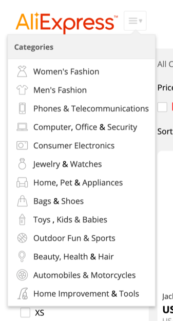As an example, Hollister allows a user to hover over the shopping cart to quickly preview a picture of a product, its name, and the price of it.
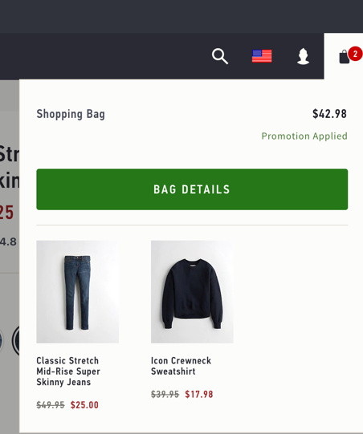Match Between System & The Real World
When clicking and scrolling down to the bottom of a listing, users will come across a section that contains a “Related Searches” section with categories, such as “Wholesale,” “Popular,” “Price,” and more. Two of the categories – “Related Searches” and “Popular” – are familiar terms users will generally find on an online store. The rest, however, don’t make a lot of sense (category-wise and grammar-wise) and backlink to unnecessary pages on AliExpress.
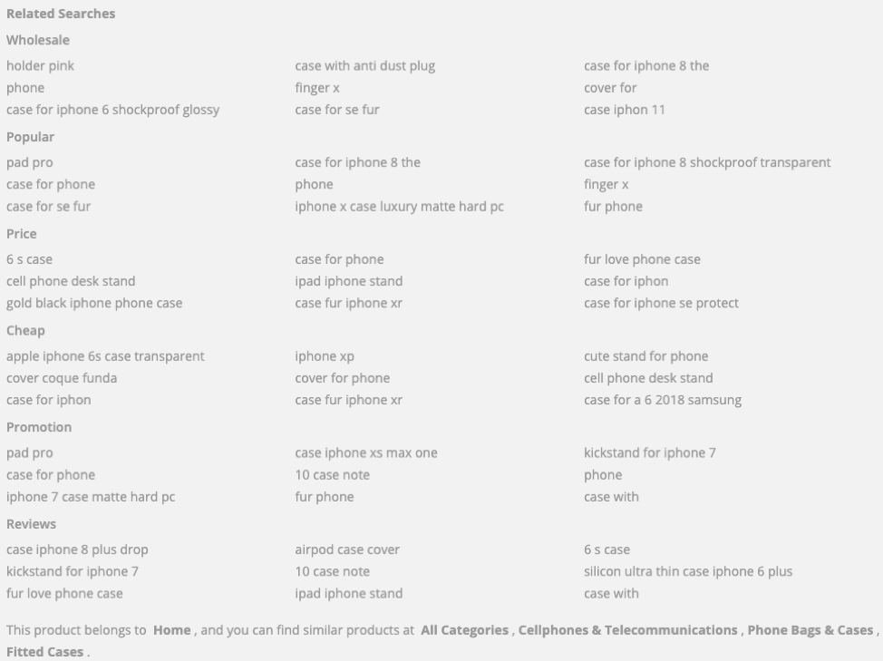For instance, clicking on “gold black iphone phone case” leads to a page, which doesn’t display information any differently aside from adding the subfolder /price. It’s just a search result of the phrase. Searching for just https://www.aliexpress.com/price leads to a 404 page, which also doesn’t give users any information about what the category is for.
Severity of Issue: Low. It doesn’t affect much of the user experience as most users don’t scroll to reach the bottom of a page. Design-wise and SEO-wise, this is a mess and could be cleaned up to have a shorter page and preserve link equity.
Proposed Solution: Much of this can be deleted and be replaced with a simple “Related Products” section with a few user searches that aren’t pulled from user input.
Consistency & Standards
AliExpress is generally known for its cheap prices in return for slow shipping speeds. Some items I have previously received took up to 3 months to arrive. To combat that, AliExpress has this option users can check called “Fast Shipping” in the search result pages.
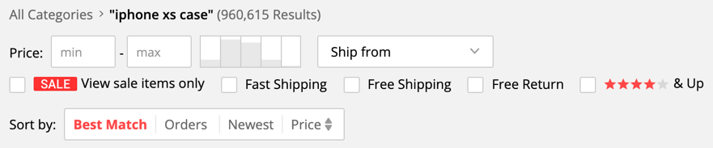However, unlike the notorious Amazon Prime free 2-day shipping plastered all over Amazon’s website, the phrase “fast shipping” on AliExpress is vague. Does this mean the product will arrive within 1-2 days? Within a week? Or within a month? Upon clicking on a few of the search results with “Fast Shipping,” not all of the products have a consistent mention of when they’ll arrive, as seen in the screenshots below. In addition, it depends on where the product will be shipped from.
For some products, it’s even more vague. This one in particular guarantees delivery before January 17th and has a “Fast Shipping” label on it. However, the other shipping options seem to guarantee it even faster and don’t have a “Fast Shipping” label on them.
Severity of Issue: Medium. Many consumers who use AliExpress understand that AliExpress shipping isn’t like Amazon Prime shipping where items arrive in 2 days. That’s one of the reasons as to why their products are usually so cheap. Therefore, users are willing to sacrifice shipping time for lower prices. In addition, this issue isn’t detrimental as users can still check the listing page for shipping information.
Proposed Solution: Mention how long the shortest shipping speed with the “Fast Shipping” label will be in the search results page or have a page explaining what “Fast Shipping” means and guarantees.
Error Prevention
AliExpress does not have a “Did you mean ____?” function when users mistype the product they’re looking for. If a user misspells only one word, AliExpress does take that misspelled word out in their “Results for” section on the same page.
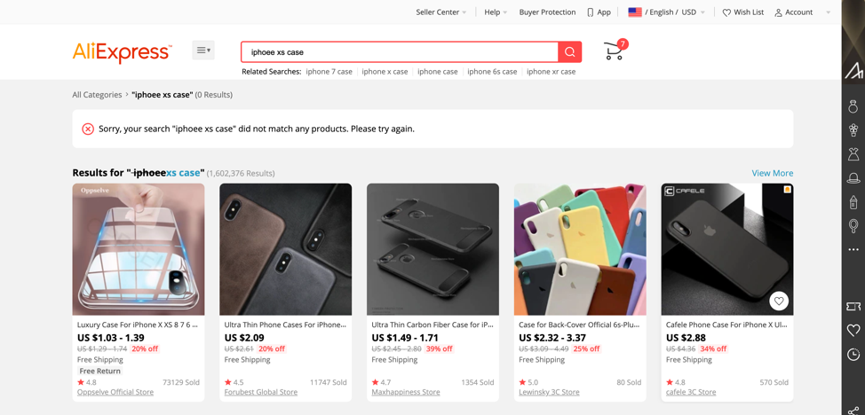However, this feature doesn’t apply when a user searches one word. As a result, users are left with a blank page.

Severity of Issue: Medium. If users know what they’re looking for and realize they’ve misspelt something, they will go back to the search bar above and retype it. However, it’s easier for the user to see what the website suggests, as some users may not realize they are spelling the word(s) incorrectly. Therefore, it would be helpful to provide this option.
Proposed Solution: Add a “Did you mean ____?” backlink to the correct input or automatically correct the user’s input, similar to how Amazon or Google does it. And, if the user does mean what they typed, they can revert back to that option simply by clicking on it.
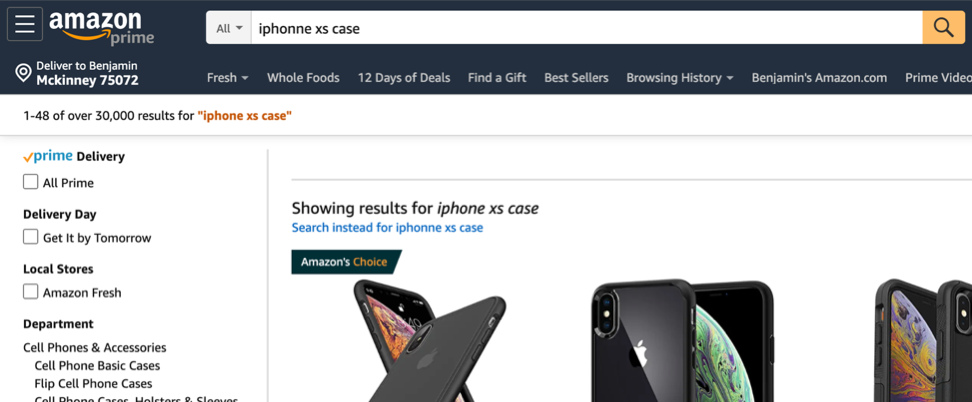Aesthetic & Minimalist Design
When a user first hops onto AliExpress, they are welcomed with many moving items. The circle on the left side bounces up and down, the slider in the middle moves quickly, the “AliExpress” icon flips to showcase the “AliExpress Awards 2019” promotion, and the banner at the threshold of the fold flashes to advertise another sale. Right away, the site is very flamboyant, and it is hard to know which item to pay attention to.
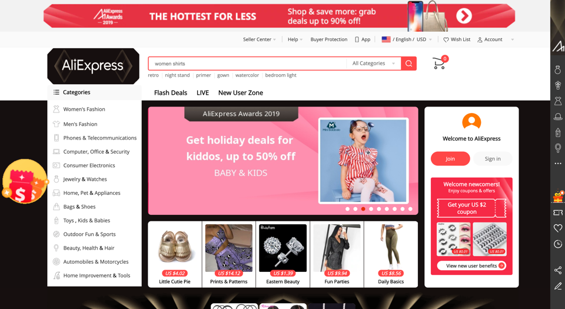In addition, the site layout of AliExpress is cluttered with categories shown on the left column as well as the right sidebar, which promotes the “AliExpress Awards 2019” sale; however, the categories are repetitive.
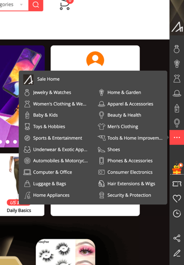Upon further inspection, their mobile website is missing the sidebar. While still having flashing banners and promotions, the layout is much better than the desktop website.
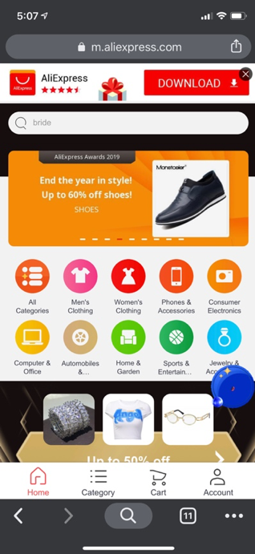Severity of Issue: High. There are too many things that divert the user’s attention, making it almost seem like a virus or ad-filled website. The more links on a webpage, the more one competes with the visibility and clicks of the others around it. Showing so many items at once on the homepage also gives the user too many options, and research shows that too many options often leads to lower sales and increased bounce rates. Users navigate better with simplicity and less choices. Finally, a crowded layout often means that the load time is slow which can also increase bounce rates, as users tend to navigate away from a page after it fails to load after 15 seconds or more.
Proposed Solution: Remove the extra promotional sidebar on the homepage and put it in another page, such as the clickable AliExpress logo with the promotion going on. Or, have just one clickable banner with the promotion showing instead of having four different areas above the fold showing the same promotion.
Sketch/Prototype for Cart Issue
Original Page Layout
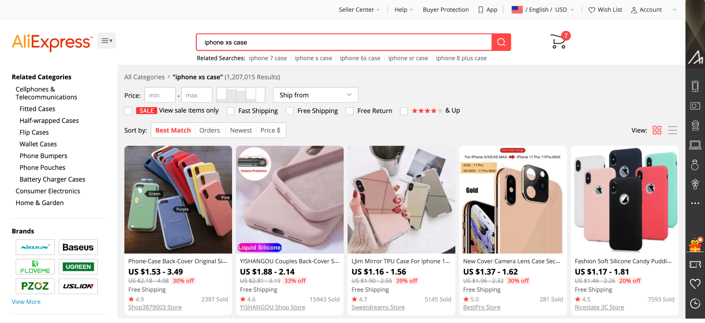Redesigned Page Layout
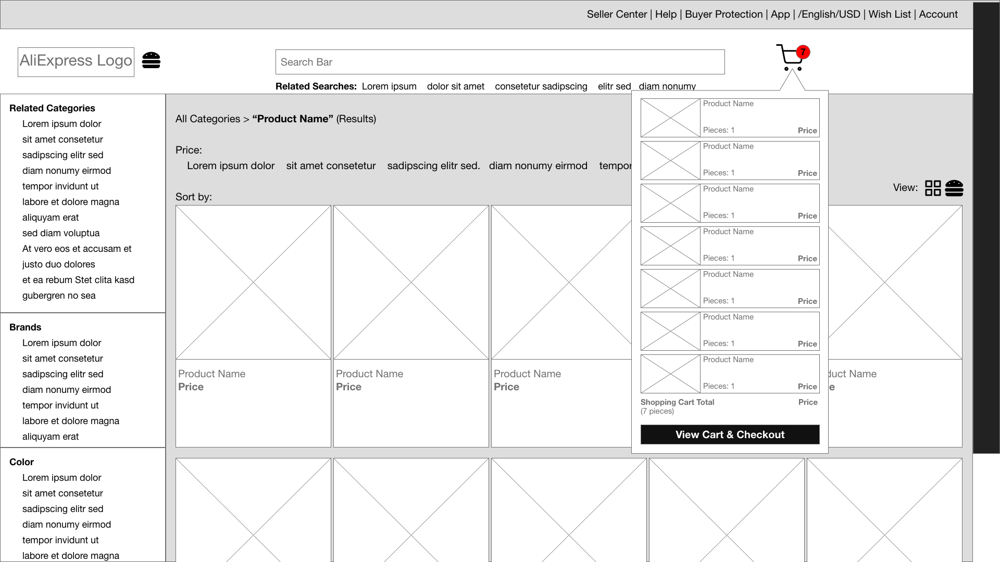The goal for this redesign was to allow users to quickly preview what was in their cart without going to a new page. A hover function would be added to the shopping cart, similar to how AliExpress already has a hover option for categories in the hamburger menu next to the logo.
The most important pieces of information to include in this redesign would be the product picture, name, prices, number of items to be purchased, and the total cost of the products. A big call-to-action button on the bottom would lead to the shopping cart page where users can make changes like adding more pieces or deleting an item from their cart.
The number of items to be purchased is labeled “pieces” to keep up with consistency because AliExpress uses this term to describe an individual item.
When the user hovers over a product, there would be two options shown: one is to edit the product already in their shopping cart on a pop-up page when clicked on, and the other is to remove the product from the shopping cart.

Proposed Usability Test Script
Test Goals & Participants
This usability test will be performed to understand how AliExpress buyers search for products and ultimately check out. The main key is to research if a user would prefer a dropdown shopping bag before proceeding to the checkout screen and how much, if any, it would influence a buyer’s decision to purchase a product. Users are a part of the primary group of buyers who have an account on AliExpress. They will access AliExpress on the desktop site from desktop computer to perform this test.
Task Setup
- Log into the computer.
- Open AliExpress on Google Chrome and log in:
- Email Address: usertest00@utdallas.edu
- Password: cometswhoosh1!
- Navigate to the homepage with the search bar on top.
- Ensure the cart is empty to begin.
Scenario & Task
To the Moderator:
Welcome the participant and get him or her situated in the testing environment. Make sure the participant is okay with being interviewed and having his or her mouse movements recorded on the screen.
Two user testing groups will be used to perform an A/B test:
- Group one: Use AliExpress as is, without the hover shopping cart implementation.
- Group two: Use AliExpress with the hover shopping cart implemented.
Both groups will be instructed to use AliExpress’ search bar to purchase three items of their liking on this list within the first two pages:
- iPhone XS case
- iPhone XS screen protector
- Apple Airpods case
Participants are free to look at his or her shopping cart to see whether or not he or she is happy with their choice.
During the test, all participant mouse movements will be recorded using a recording tool, such as Lucky Orange, to see where they spend the most time on the page and where their mouse focuses on the screen during their task.
After the test is complete, participants will be interviewed with questions focusing on their experience on the site:
- What did you like about the website as you were going through the task?
- What did you not like about the website as you were going through the task?
- Is there anything you would like to see be improved about the site?
- Do you like the option of previewing your shopping cart items on the same page or on a different page? Why or why not?
To the User:
You just received a new iPhone XS and Apple Airpods as a birthday present from your rich uncle-in-law living in Alaska. You plan to purchase three items for your newly acquired Apple devices to protect them from damage:
- iPhone XS case
- iPhone XS screen protector
- Apple Airpods case
Use AliExpress’ search bar to purchase these items you like on this list within the first two pages of the search results page. You may look at your shopping cart as many times as you like and switch the current item(s) with another from the search results page as many times as you like. Once you are satisfied with your selections, you may click the “Buy” button on the “Shopping Cart” page.
You will then be interviewed by the moderator about your buying experience on AliExpress.